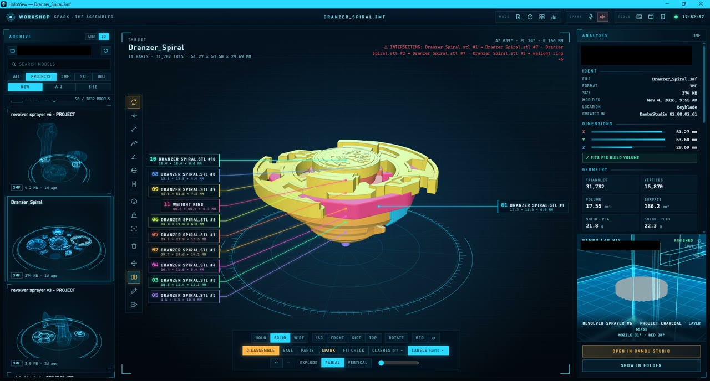
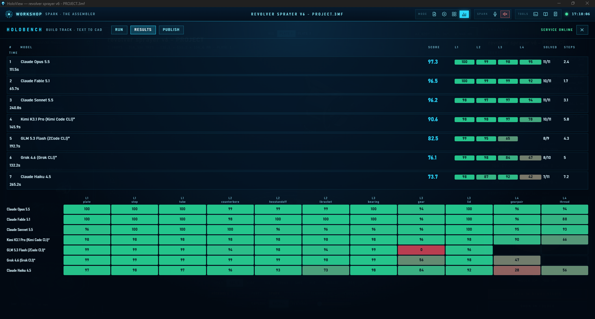
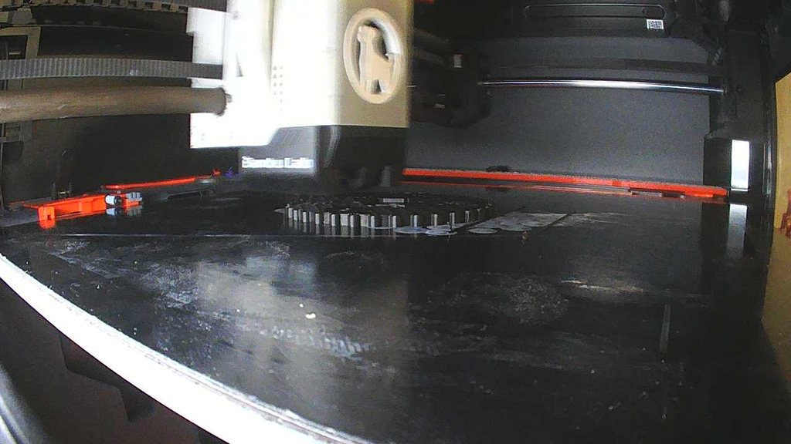

Full-stack AI developer. At Google I built the agent that turns a one-line bug report into a reproduced, filed bug, and now I test whether AI can fix real Android builds. After hours I build agents, print my own parts and teach myself robotics.
As you scroll, a 3D part in the background builds up layer by layer, the way a 3D printer makes it. It is a Beyblade arena piece I designed. Everything marked “real” on this page comes from my own computer.
Scroll or press the arrow keys · press X to make the cards see-through · the button at bottom right is a chatbot that only knows about me
Contractor via S2SSOFT / HCL. I check whether LLM-written build fixes actually compile and behave on third-party Android projects. I worked on the framework that evaluates the benchmark, implemented the LLM-as-a-judge feature, and improved the evaluation workflow end to end. I also review benchmark tasks for fairness, track regressions between model versions, and co-designed the system architecture of a tool that finds security vulnerabilities in Android packages.
AI-assisted bug filing. A tester just describes the bug they hit. Gemini reproduces it, captures the stack trace and files the bug in the tracker. It cut the time spent per bug by 75% (measured), let the testing team file bugs much faster, and automated the triage step, so the triage team works more efficiently too.
I also led the team’s internal tools: performance dashboards and cloud-gaming diagnostics extensions that Intel and partner teams adopted.
GPA 3.86. As a graduate assistant under Prof. Mehdi Zargham I worked on a 3D and virtual-reality coding environment for kids, built with Unity and C# and a custom compiler. Kids wrote code that built a world and then rode it in VR, at summer workshops and VR-lab tours in 2018.
I use Claude Code every day, and I read and test what it writes. These are the languages I can write and debug myself, each with things I built in it.
layershot is covered by tests. The chatbot on this site has 89 tests, including attacks. HoloBench keeps a hidden test set so nobody, including me, can tune to it. When a result looks too good I rebuild it cleanly.
layershot is a tool I wrote. It lets an AI program see and click Windows apps that are hidden behind the window you are using, without taking over your screen or mouse. Below is its real output from my own PC on Nov 5, 2026 (FG = in front, MIN = minimized). Window titles are shortened.
> layershot list 0 FG chrome.exe this page 1 WindowsTerminal.exe my terminal ... 4 MIN electron.exe HoloView 5 MIN bambu-studio.exe Bambu Studio ... 9 MIN Obsidian.exe Graph view > layershot shot 4 -o holoview.png saved holoview.png 1920x1032 layer 4

Four lessons keep coming back, in my work at Google and in my own projects:
1. Test the real result, not just an earlier step. A step in the middle can look fine while the final output is broken. So I open the final file, click the real button, or read the final score.
2. Measure before you believe. Do not trust a code comment, a claimed speed-up or a good-looking number until you have timed or tested it yourself.
3. Watch for failures that look like success. A program can run without any error and still do the wrong thing, like running on the slow chip, or an AI agent that never received its tools.
4. Decide what counts as a pass before you start. Keep some tests hidden, and if a result looks too good, rebuild it from scratch and check again.
My voice assistant, Jarvis, slowly used up about 15 GB of memory. Until I find the leak, a Windows task restarts it at 4:30 AM every day.
A comment in my code said the speech-to-text model and the text-to-speech model could not run together on the GPU. I tested it: they ran fine once I installed one missing file. Speech-to-text went from 1,077 ms on the CPU to 79 ms.
I thought a “turbo” add-on was making my video generation faster. When I measured, it turned out it was never connected. The real speed was 15.7 seconds per step.
On Windows, one missing file made llama.cpp (the program I use to run language models locally) quietly use the CPU instead of the graphics card. Everything worked, just far too slowly, and nothing warned me.
Hugging Face limits the speed of each download connection. Downloading with 16 connections at once (using a tool called aria2) was about 100 times faster than one connection.
Running one command (vercel link) wiped my .env.local file, which held my API keys. Some were gone for good. Now I back up those files before I touch a project.
When I tested the GLM model through its own command-line tool on HoloBench, it answered without ever using the benchmark’s tools, because my setup used the wrong config format. Running it by hand showed the problem. After the fix it scored in the high 90s on the easy tasks. Runs where the test setup itself failed are left out, not scored as zero.
Windows power-saving settings (PCIe ASPM and USB suspend) kept switching off devices that were idle. I turned both off. A broken built-in network adapter also froze all networking on the machine, so I keep it disabled.
My PC ran out of memory, and that broke WSL (Linux running inside Windows). I added a memory guard and capped WSL at 10 GB, so one program cannot take the whole machine down.
The bug-filing tool is not about nicer bug text. The agent has to reproduce the bug and capture the stack trace first, and only then file it. That is why it cut the time per bug by 75% and made triage easier.
On Android Bench, the hard part is deciding what counts as a pass, and whether a task is fair, before any model runs. I carried that into my own work: HoloBench keeps a hidden test set, and a result that looks too good gets rebuilt.
HoloBench is a test I built to check whether AI models can design 3D parts that are correct and printable. It has 19 tasks in four levels, from a simple plate up to meshing gears and a threaded rod. Each task has a correct reference answer, and some tasks are kept hidden so a model cannot be tuned to them. Every model gets the same instructions, the same three tools, 15 tool calls and 10 minutes. Scores are out of 100: 55 for correct dimensions, 25 for correct shape, 10 for printability and 10 for efficiency. A plain box scores about 33. The reference answer scores about 98.
The weakest model, Haiku, fused two gears into one solid and faked a thread by stacking rings. My checks caught both.

The Claude models were tested on Oct 5, 2026. Kimi, GLM and Grok were tested on Nov 5 through their own command-line tools, on the 11 public tasks only. Almost every model scores close to perfect on the easy levels (1 and 2), so the difference shows up on levels 3 and 4. On level 4, Claude Opus scored 95, Kimi 78 and Grok 47. GPT could not be tested because its tool hit a usage limit, and GLM and Grok have some level 4 results missing. Next I want to try open-ended design briefs. The code is private.
Most AI apps ask a big language model to write free text and then try to read an answer out of it. System One (from TypeSafe, which I use through their Jev service) works differently. It is a small, fast model built only to decide. I give it a question and a fixed list of options, and it returns one choice or a score, never free text.
An answer that is one of a few fixed options can be checked, logged and tested. A paragraph of text cannot. When a decision is wrong I can see which option it picked, change the question or the options, and test again.
My assistant Jarvis. The decision step picks which tool to run and whether an action is risky enough to ask me first. I started with a decision model running on my own GPU (CLM-8B), then moved to the hosted Jev on Oct 6, 2026. While it runs I log every step, so I can later train a small local model for the same job.
Coding agents. I adapted TypeSafe’s open-source (MIT) skill for Claude Code and Codex, so coding agents turn a vague “ask the model” step into a typed decision: a choice, a yes/no, or a score.
Safe upgrades. I pin one model version for real decisions and run the newer version in “shadow” mode, where it only logs what it would have decided. I switch only after comparing the two on data neither has been tuned to.
I tested speech-to-text (turning speech into words) and text-to-speech (turning words into speech) on my own PC, using 80 noisy test clips, to choose what my assistant Jarvis would use. Shorter bars are faster.
STT = speech-to-text. WER = word error rate. The GPU version of Whisper needed one extra file (a DLL) to run. Giving Whisper a starting prompt made it make more mistakes, so I removed it.
I print on a Bambu Lab P1S at home: parts I design myself, mostly to fix or fit something in my own house. I aim for 0.15 to 0.25 mm of clearance and care more about a part that fits than a fast print. Below are three of the biggest things I have designed with Claude. Pick one, drag it to look around, and slide to cut through it. They are my real model files, reduced in detail so the page loads.
Drag to rotate. The slider cuts through the assembled model.

I also wrote my own desktop app for the hobby, HoloView, because I was tired of switching between viewers and the slicer. It browses my 3,800+ model files, measures parts (distance, wall thickness, hole diameter, overhangs, section cuts) and sends a plate to Bambu Studio. It is a tool for my own use, not something I sell.
HoloView is the desktop app I built for my 3D printing hobby. It is made with Electron, React and TypeScript on top of a small Python server, and three.js draws the 3D view. Everything runs on my own PC.
Look and measure. Opens Bambu projects, STL and OBJ files, including 400 MB ones. Measurement tools: point probe, distance, path length, angle, hole diameter, wall thickness, bounding box, section cut with cross-section area, and an overhang map that colours steep faces and gives a support verdict. It warns when a part exceeds the P1S’s 256 mm bed.
Assemble and animate. Puts parts together with joints, checks clashes live, plays an animation (a drawer sliding out, a lid opening) and records it as a video.
Print. Sends a plate to Bambu Studio, shows live printer progress, and writes Bambu Studio presets from a fabrication manual I compiled from the vendor’s wiki and forum, with every claim tagged official, consensus or anecdote.
Each agent is a Claude Code process with its own skills and a short list of tools, and a small daemon runs them. They do not share one big prompt.
Forge designs a new part in code (manifold3d, OpenSCAD, FreeCAD or Blender, headless). Every run is measured and rendered, so it sees its own mistakes and fixes them. Spark assembles and alters models inside HoloView: it places parts, moves them as groups, adds joints, and re-checks. A separate read-only verifier looks at the result before Spark can say it is done. Scout researches references. Fab can start or stop a print, and it asks me first. For the modelling step I can pick the model in a dropdown: Claude, Kimi, GLM or Grok, each through its own CLI, all driving the same CAD tools.
One rule I added after a failure: a part is not finished until a print-ready check passes. Spark once saved meshes as loose triangles that Bambu Studio flagged as open edges. Now the mesh is welded exactly and checked for openings and floating geometry before any sign-off.
Jarvis is the voice assistant I run locally. I say “add a handle to the drawer” or “print plate two”. Jarvis passes the request to Hermes, an agent runtime on my PC, which starts the right agent through an MCP server (a standard way for AI programs to use tools). The agent works inside HoloView, and I watch it happen on screen. Anything irreversible, like starting a print or deleting a file, pops a confirm dialog in Jarvis first.
The next project is hardware that moves. I'm building the OpenCat robot dog: twelve small motors (servos) controlled by a basic ESP32 chip, with a body I will 3D print.
The software settings are done. The body frame comes next, then the first wobbly steps. I'll post the first one here.
I plan my days in an app I wrote called Level Up. It works like a game, with XP, ranks from Ronin to Shogun, and streaks. I code in the morning, practice system design after lunch, and go to the gym in the evening. My game time stays locked until the day's practice problems are done. I built it that way on purpose to keep myself honest.
I'm looking for senior AI engineering work: agents, LLM evaluation, applied AI. Remote is welcome.
Python, TypeScript, React, Node.js, FastAPI, LangGraph, MCP, RAG, PyTorch, Docker, AWS, Firebase.